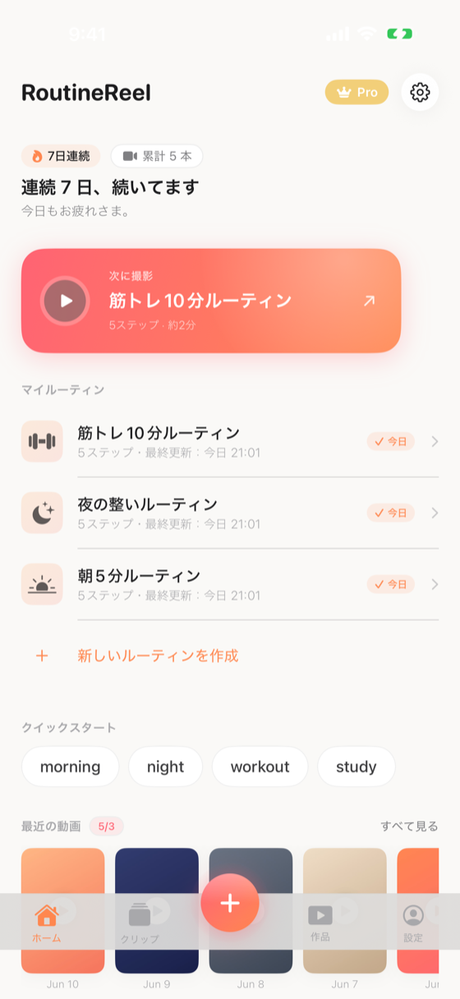

v1.0 から導入された新ホーム画面。v1.4 で FeatureFlag を廃止し唯一のホーム画面として固定。

Views/Designs/DesignsHomeView.swiftFeatureFlags.swift 削除・DesignsHomeView を唯一のホーム画面として固定Views/Home/HomeView.swift（削除済み。v1.4 で廃止）startMode: .shootingSequential、step 0 から全ステップ撮影）。v1.2.0 で動線を再変更: クリップライブラリ起動（.clipLibrary）→ 連続撮影即開始（.shootingSequential）に変更（Quick Start の名称と行動の一致・初回動画完成摩擦の最小化）。v1.0 で プリセット名を検索意図ワードへ刷新（raw value は不変）.contextMenu でも同一メニューを表示）+ 新規ルーティン作成ボタン。shotToday が true のときのみ chevron 手前に「今日 ✓」緑バッジを表示| トリガー | 遷移先 | 表示方法 |
|---|---|---|
| 設定アイコン / 設定タブ | SettingsView | sheet |
| 中央＋ボタン / 新規ルーティン作成ボタン | PresetSelectView | sheet |
| Quick Start カード（4種） | ShootingView（startMode: .shootingSequential、step 0 から連続撮影） | fullScreenCover（item-based） |
| ルーティンカード → 編集する | RoutineEditView | sheet（item-based） |
| ルーティンカード → 全ステップ続けて撮影 / 「次に撮影」CTA / 通知タップ | ShootingView | fullScreenCover（item-based） |
| ルーティンカード → クリップライブラリを開く / クリップタブ | ClipLibraryView | sheet（item-based / NavigationStack内） |
| 最近の動画 → すべて見る / サムネタップ / 作品タブ | VideoListView | sheet（NavigationStack内） |
| Pro バッジ（無料時） | PaywallView | sheet |
| タブ | 挙動 |
|---|---|
| ホーム | 何もしない（現在の画面） |
| クリップ | ルーティン件数で3分岐（クリップタブ動線参照） |
| 中央＋ | 新規ルーティン作成（PresetSelect or Paywall trigger: routineLimit） |
| 作品 | showVideoList = true → VideoListView |
| 設定 | showSettings = true → SettingsView |
※ホーム以外のタブはモーダル起動後、selectedTab を即 .home に戻す（タブの選択状態を保持しない）
旧実装は「クリップタブタップ = routines.first で即撮影開始」だったが、ユーザーの意図（ライブラリを見たい）と乖離していたため修正。
| ルーティン件数 | 動作 |
|---|---|
| 0件（ルーティン未作成） | handleCenterPlusTap() 経由でルーティン作成誘導（PresetSelect または Paywall） |
| 1件 | その唯一のルーティンの ClipLibraryView を直接起動（startMode: .clipLibrary） |
| 2件以上 | ClipRoutineSelectSheet（ルーティン選択シート）を sheet で表示し、ユーザーが選んだ後に ClipLibraryView を起動 |
クリップタブタップで即撮影開始していたバグは 3b93040 で解消（致命3件のうちの1件）。
activeSession の型を Routine から SessionPayload（Identifiable struct）へ変更し、起動経路ごとの初期画面を制御する。
let routine: Routine + let startMode: CreateSessionView.StartMode（UUID で Identifiable）init 内で _shootingTarget を事前確定するため、ClipLibraryView が一瞬見えてチラつく問題を回避。
旧実装では行タップが即撮影（.shootingSequential）だったが、意図不一致のため .clipLibrary に変更。
startMode: .clipLibrary）.contextMenu フローティングメニューを表示（長押し contextMenu と同一メニュー。v1.1.0 で常設化）.contextMenu フローティングメニューを表示（v1.4 で confirmationDialog から変更）。⋯ ボタンと同一メニューを両経路で提供prefix(4) 廃止）マイルーティンカード行末の ellipsis（⋯）ボタンタップ、または長押しで iOS 標準のフローティングメニューを表示。どちらの経路でも同一メニューを表示する（v1.1.0 で ⋯ ボタンを常設化し発見可能性を改善）。v1.4 以前は confirmationDialog（画面下部シート）だったが、.contextMenu に変更。メニュー項目は DesignsHomeView.myRoutinesListSection に集約（DesignsMyRoutineCard の onLongPressGesture / onMenuTap は削除済み）。
startMode: .shootingSequential）startMode: .clipLibrary）maxFreeRoutines = 2）trigger: .routineLimit）trigger: .routineLimit）して複製拒否trigger: .routineLimit）trigger: .storageLimit）trigger: .manualルーティン削除時の物理ファイル + DBレコードの安全な削除順序:
Array(routine.clips) スナップショット化（並行更新防止）ClipStorageService.deleteClip）Array(routine.videos) スナップショット化VideoStorageService.deleteVideo）modelContext.delete(routine) で SwiftData cascade 削除削除確認 alert で紐づくクリップ数・動画数をユーザーに提示。
リマインダー通知タップで起動された場合、NotificationRouter.shared.pendingRoutineId を監視し、該当ルーティンの撮影画面（ShootingView）を fullScreenCover で起動する。
.onAppear および .onChange(of: pendingRoutineId)oldValue != nil ガードで nil リセット時の不要再発火を防止pendingRoutineId = nil でクリアroutines.flatMap(\$0.clips) を横断し、「今日 or 昨日に撮影記録あれば streak 継続、なければ 0 リセット」のルールで連続日数を算出してヒーロー上部に表示する。
lastShotAtcomputed property。routine.clips.map(\.recordedAt).max()shotTodaycomputed property。Calendar.current.isDateInToday(lastShotAt)（クリップを1本以上撮影した日か。マイルーティンカードの「今日 ✓」緑バッジ判定に使用。Hero 判定には不使用）hasCompletedVideoTodaycomputed property。routine.videos.contains { Calendar.current.isDateInToday($0.createdAt) }（v1.2.0 追加。完成動画 = Video レコードが今日 createdAt のものがあるか。Hero「今日はもう1本つくれています」判定に使用。クリップ撮影のみで動画未生成の状態では true にならない）currentStreakcomputed property。単一 Routine の連続日数computeStreak(from:) static複数 Routine 横断 helper。DesignsHomeView の overallStreak / totalVideoCount / overallHasCompletedVideoToday から呼び出す| 条件 | バッジ | メインコピー | サブコピー |
|---|---|---|---|
| 記録ゼロ（overallStreak == 0 かつ totalVideoCount == 0） | なし | 今日もルーティンを記録しよう | 5分だけでも。 |
| overallHasCompletedVideoToday == false（今日完成動画なし・記録あり） | 🔥 N日連続 / 📹 累計 N 本（あれば） | 次の動画を1本つくろう | — |
| overallHasCompletedVideoToday == true（今日完成動画あり） | 🔥 N日連続 / 📹 累計 N 本（あれば） | 今日はもう1本つくれています | — |
プロダクトポジショニングを「毎日続ける習慣アプリ」から「週2本つくる制作ツール」に統一するため、Hero メインコピーの分岐条件とコピー文言を変更した。
overallStreak >= 1（連続日数があるか）→ 新条件: overallHasShotToday（今日クリップを撮影済みか）。コピーが「作り続けること」ではなく「今日1本つくる」動機に直接紐づくよう変更overallHasShotToday（クリップ撮影ベース）→ overallHasCompletedVideoToday（完成動画ベース）に変更。クリップを撮っただけで動画を生成していない状態では「今日はもう1本つくれています」を表示しない。Hero の「つくれています」を書き出し済み Video レコード（Video.createdAt が今日）の達成と一致させるshotToday（クリップ判定）のまま据え置き（完成動画とは意味が異なるため）VideoStorageService.thumbnailURL から UIImage を読み込み 9:16 で表示play.circle.fill 白アイコン+影。暗い被写体でも視認可能fullScreenCover で RecentVideoPlayerSheet 起動（黒地・9:16 fit・右上 X・AVPlayer 内部生成して即再生）play.fill プレースホルダDesignsRecentVideoThumbnail 自身が Button を持つため二重ネストを解消Views/Common/RecentVideoPlayerSheet.swift「最近の動画」見出し横に storageMeterBadge を表示し、無料ユーザーに保存上限を可視化する。
| 状態 | 表示 | 挙動 |
|---|---|---|
| Free（残あり） | 「X/3」 | タップで PaywallView 起動 |
| Free（上限到達） | 「3/3」ピンク強調 | タップで PaywallView 起動 |
| Pro | 「∞ 保存」 | 非インタラクティブ |
VideoStorageService.freeStorageLimit = 3proUpgradeCard 副題にも「アプリ内保存 X/3 ・記録をもっと自由に」を統合表示PaywallView.planButton の年額バッジを「おすすめ」→ SubscriptionManager.yearlySavingPercentage で算出した「X% お得」へ動的化（算出不能時は「おすすめ」フォールバック）| raw value（永続化キー・URL パス） | 旧表記 | 新表記（検索意図ワード） |
|---|---|---|
morning | モーニングルーティン | 朝5分ルーティン |
night | ナイトルーティン | 夜の整いルーティン |
workout | ワークアウト | 筋トレ10分ルーティン |
study | 勉強ルーティン | 集中45分ルーティン |
ステップ名も日本語化（wake up→起きる, skincare→スキンケア, go out→出発, warm up→ウォームアップ ほか）。raw value は永続化キー・URL scheme パスとして不変。
routinereel://preset/<rawValue>（project.yml + Info.plist の CFBundleURLTypes に登録）RoutineReelApp.body.onOpenURL でパースして AppSettings.pendingPresetRawValue に格納.onAppear および .onChange(of: settings.pendingPresetRawValue) で consumePendingPresetIfAny 実行。同名 Routine が既に存在すれば再利用、無ければ新規作成し activeSession を起動（fresh start / 既存セッション 両対応）常時アニメーションは意図的に最小化（GPT評価「アニメーション頑張った感」回避のため）。
v1.4 で FeatureFlags.swift を削除し、DesignsHomeView を唯一のホーム画面として固定した。旧 HomeView への切替トグル（SettingsView「β機能」セクション）は廃止済み。ロールバックが必要な場合はコード修正・再申請が必要。
プリセットタップ後の動線は v1.3 以降で 2 度変更されている。
startMode: .shootingSequential）直接開始startMode: .clipLibrary）。Quick Start はルーティン作成＋クリップライブラリ起動の動線に整理startMode: .shootingSequential、step 0 から全ステップ撮影）に再変更。「選ぶ→撮る→完成」というオンボーディングの流れと「Quick Start」という名称の行動を一致させ、最初の動画完成までの摩擦を最小化。クリップライブラリは既存ルーティンの再編集・素材確認用として ⋯ メニュー等に残る旧実装は CTA タップでクリップライブラリを開いていたが、意図（すぐ撮影したい）と合わないため変更。
startMode: .shootingSequential）VoiceOver で正しく認識されるよう、タップ可能な要素を Button または .accessibilityAddTraits(.isButton) に変更。
onTapGesture や外側に Button を被せた構成（VoiceOver が「ボタン」と認識しない場合があった）Button { ... } label: { ... } に統一。VoiceOver が適切な "ボタン" トレイトを付与アプリ全体の colorScheme 適用を整理し、warm white ホームでのステータスバーの視認性バグを修正した。
.preferredColorScheme(.light) をルートに設定。warm white 背景でステータスバーが白文字になり不可視だった潜在バグを解消ClipPlayerView / RecentVideoPlayerSheet / VideoPlayerSheet）は個別に .preferredColorScheme(.dark) を付与し視認性を維持v1.1.0 で以下の未使用ファイル（計約850行）を削除した。
Views/Home/HomeView.swift（旧ホーム画面・v1.4 の FeatureFlag 廃止で既に不使用）/ DesignsRecordPreviewView.swift（モックデザイン検討用プレビュー、本番未使用）/ DesignsRecentProjectCard.swift（DesignsHomeView の旧プロジェクトカード、DesignsHomeRecentVideosSection に置換済み）先頭ルーティンが部分撮影中（isPartiallyShot == true）の場合、通常の「次に撮影」Hero CTA と排他表示にし、代わりに「撮影の続き」カードを Hero セクション内に表示する。
routines.first?.isPartiallyShot == true（先頭ルーティンが部分撮影中の場合のみ）startMode: .resumeShooting で ShootingView を起動。skipStepsWithExistingClips モードで未撮影ステップのみを連続撮影Routine.isPartiallyShot（モデルに集約された computed property）中央＋ボタンが offset(y: -18) でバナー広告領域に食い込み、AdMob の誤タップが発生するリスクがあった。v1.1.0 でバナー直下に 24pt の非インタラクティブスペーサーを挿入し離隔を確保した。
offset(y: -18) でバナー領域に重なり、AdMob 誤タップリスクがあったColor.clear.frame(height: 24).allowsHitTesting(false) をバナーとタブバーの間に挿入編集・複製・削除などのルーティン操作が長押し contextMenu にしか存在せず、発見性が低かった。v1.1.0 でマイルーティン各行末に ellipsis（⋯）ボタンを常設し、ドリルダウンしなくても操作に気づける設計に変更した。
Button { } label: { Image(systemName: "ellipsis") } を各マイルーティン行 HStack の trailing に配置し、.contextMenu を呼び出す| バージョン | 日付 | 変更内容 |
|---|---|---|
| v1.9 | 2026-07-13 | v1.2.0(build68) F1・F2 反映。F2=Hero「今日はもう1本つくれています」判定をクリップ撮影ベース（overallHasShotToday / routine.shotToday）から完成動画ベース（overallHasCompletedVideoToday / routine.hasCompletedVideoToday = Video.createdAt が今日か）に変更。連続日数バッジ・マイルーティン「今日 ✓」バッジ（shotToday）は据え置き（意味が異なるため）。F1=Quick Start チップのタップ後遷移をクリップライブラリ起動（startMode: .clipLibrary）から連続撮影即開始（startMode: .shootingSequential、step 0 から全ステップ撮影）に再変更（Quick Start の名称と行動の一致・初回動画完成摩擦の最小化が目的） |
| v1.8 | 2026-07-13 | d59a710 反映: Hero コピーをポジショニング統一（「週2本つくる制作ツール」）で刷新。分岐条件を overallStreak ≥ 1 から overallHasShotToday（今日撮影済みか）に変更。コピーを「連続N日、続いてます」から、今日未撮影時「次の動画を1本つくろう」・今日撮影済み「今日はもう1本つくれています」に変更。連続日数バッジは補助情報として継続表示 |
| v1.7 | 2026-07-11 | v1.2 反映: 部分撮影中の先頭ルーティンを「撮影の続き」カードとして Hero セクションに表示（isPartiallyShot 判定）。タップで続きから撮る（startMode: .resumeShooting）を起動し、通常の「次に撮影」CTA と排他表示。SwiftData 保存失敗時に挿入をロールバックしてアラート表示する saveOrLog() ヘルパー導入（ルーティン作成・複製で幽霊データを残さない設計に変更） |
| v1.6 | 2026-07-07 | 操作性・アクセシビリティ改善バッチ（7c014ad / cff03e9）: バナー広告直下に 24pt 非インタラクティブ離隔スペーサーを挿入（中央＋ボタンの offset 重なりによる AdMob 誤タップリスクを解消）。マイルーティン行末に ellipsis（⋯）ボタンを常設化（長押し contextMenu と同一メニューを表示。操作の発見性を改善） |
| v1.5 | 2026-07-03 | v1.1.0 UI/UX改善バッチ反映: マイルーティン行・クリップサムネを Button 化（VoiceOver ボタントレイト付与）。colorScheme 是正: RootView を .light に固定（warm white ホームでのステータスバー不可視バグ修正）、ClipPlayerView / RecentVideoPlayerSheet / VideoPlayerSheet は個別 .dark を維持。デッドコード削除: HomeView.swift / DesignsRecordPreviewView.swift / DesignsRecentProjectCard.swift（計約850行）を削除。仕様書内の旧 HomeView 言及を DesignsHomeView に統一 |
| v1.4 | 2026-06-19 | FeatureFlag 廃止: FeatureFlags.swift 削除・DesignsHomeView を唯一のホーム画面として固定（RootView / SettingsView / SnapshotSeeder の @AppStorage(FeatureFlags.useDesignHomeKey) 参照をすべて削除）。Quick Start タップ動線を .shootingSequential（即撮影）→ .clipLibrary（クリップライブラリ起動）に変更（ルーティン作成＋ライブラリ誘導に整理）。長押しメニューを confirmationDialog（画面下部シート）→ iOS 標準 .contextMenu（フローティングメニュー）に変更。DesignsMyRoutineCard の onLongPressGesture / onMenuTap を削除し全メニュー項目を DesignsHomeView.myRoutinesListSection の .contextMenu に集約 |
| v1.3 | 2026-06-16 | UX 改善 (596896d/692882f/3b93040): クリップタブ動線を 0件→作成誘導 / 1件→ClipLibrary直接 / 2件以上→ClipRoutineSelectSheet の3分岐に整理。マイルーティン行タップを即撮影から ClipLibrary 起動に変更。「次に撮影」CTA を連続撮影直接開始に変更。Quick Start チップを既存ユーザーには非表示（新規ユーザーのみ表示）。Quick Start タップ後も連続撮影を即開始するよう変更。activeSession 型を SessionPayload（Routine + StartMode ペア）に変更。全 9 箇所の Paywall 呼び出しに trigger 引数を付与（routineLimit / storageLimit / manual）。マイルーティンの全件表示化（prefix(4) 廃止 / 「すべて見る」ボタン削除）。保存メーター Paywall に trigger: .storageLimit を設定 |
| v1.2 | 2026-06-14 | Opus 4.8 UX レビュー対応: 既存ユーザー時に quickStartChipsSection を非表示（マイルーティンと重複していた）。新規ユーザー（routines.isEmpty）時の Quick Start は維持。既存ユーザーが他プリセットを試したい場合は中央＋ボタン → PresetSelectView で対応可能（commit 692882f）。あわせてアクティブセッション起動の重複コミット 3b93040 で「次に撮影」/マイルーティン/Quick Start/通知/URL スキームの 9 箇所を SessionPayload(startMode: .shootingSequential) に統一し、撮影到達タップ数を 3→2 に短縮 |
| v1.1 | 2026-06-12 | DesignsHomeView 900→673 行に縮減: DesignsHomeHeroSection（streak メーター + hero コピー、115 行）と DesignsHomeRecentVideosSection（保存メーター + サムネスクロール + DesignsRecentVideoThumbnail、160 行）を独立 struct に切り出し、親はバインディング / コールバック注入で連携（commit b833be4）。SubscriptionManager.shared 直参照 6 箇所を @State subscription 経由に統一し @Observable 追跡を正規化（commit 04bb873）。Analytics イベント streak_updated（撮影都度）/ video_saved（保存成功時）を組込み |
| v1.0 | 2026-06-10 | 6施策反映（#1-#7）: Hero streak メーター（🔥連続/📹累計バッジ・3パターン分岐）/ マイルーティンに「今日 ✓」バッジ / 最近の動画サムネ実画像化 + RecentVideoPlayerSheet 起動 + 外側Button二重ネスト解消 / 「最近の動画」見出し横に保存メーター（X/3・上限ピンク強調・Paywall起動）/ Quick Start プリセット名を検索意図ワードへ刷新（朝5分/夜の整い/筋トレ10分/集中45分、raw value 不変）+ URL スキーム routinereel://preset/<rawValue> 受け口追加 / Paywall 年額バッジを「X% お得」動的化 |
| v1.0.6 | 2026-05-25 | Quick Start カードサイズ 175×240 → 150×220（文字見切れ解消）/ マイルーティンの⋯メニュー二重Button問題を解消（Button → contentShape + onTapGesture へ変更） |
| v1.0.3 | 2026-05-21 | 削除ボタン追加 / Quick Start プリセット直接遷移 / タブ動作（ホーム以外モーダル起動）/ モック削除（7日連続・時間帯別挨拶） |
| v1.0.2 | 2026-05-21 | アクセシビリティラベル追加 / クリップタブUX改善（ルーティン無し時何もしない） |
| v1.0 | 2026-05-20 | 初版作成。DesignsHomeView を FeatureFlag で本番投入 |